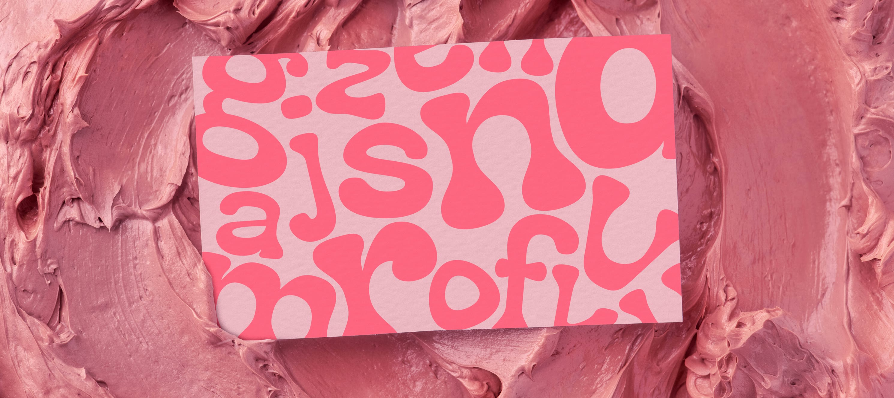
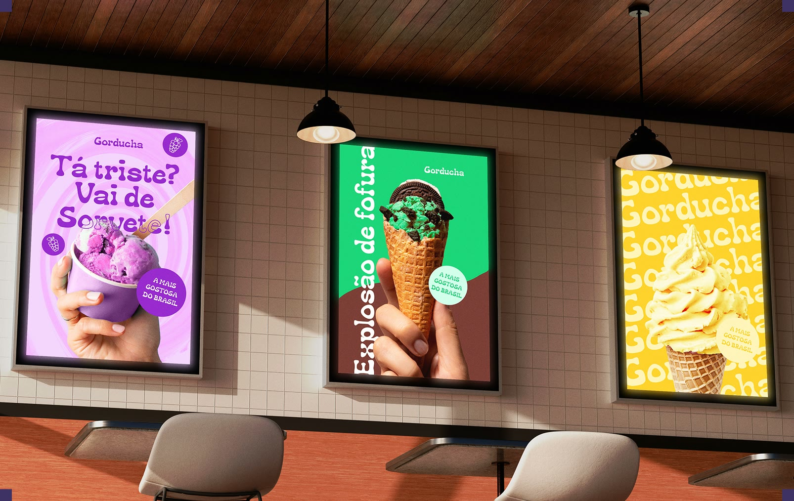
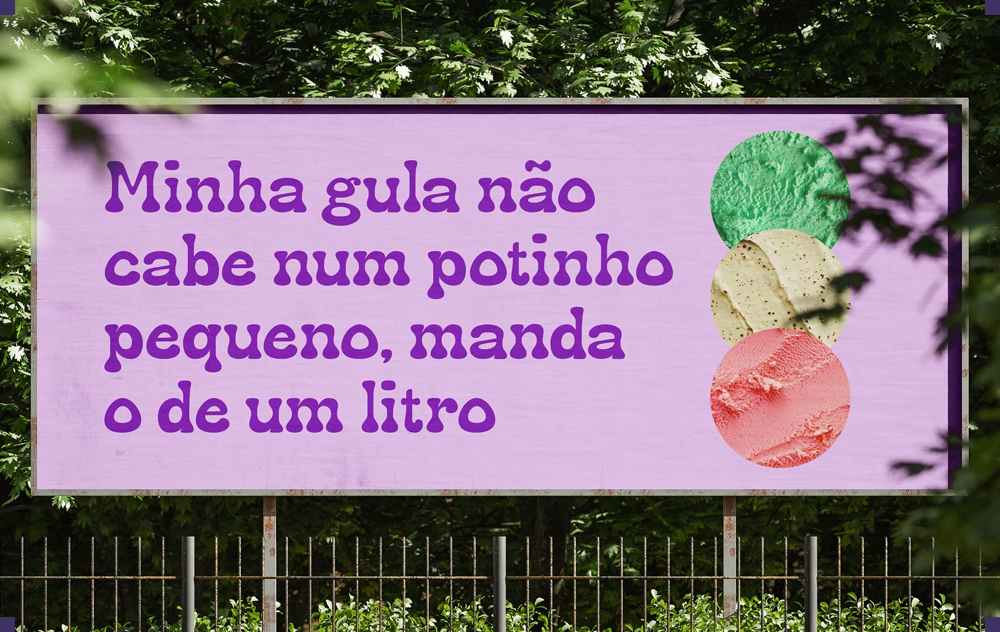
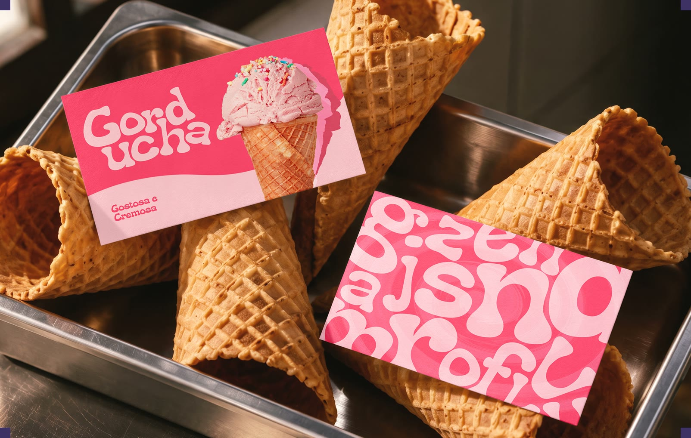
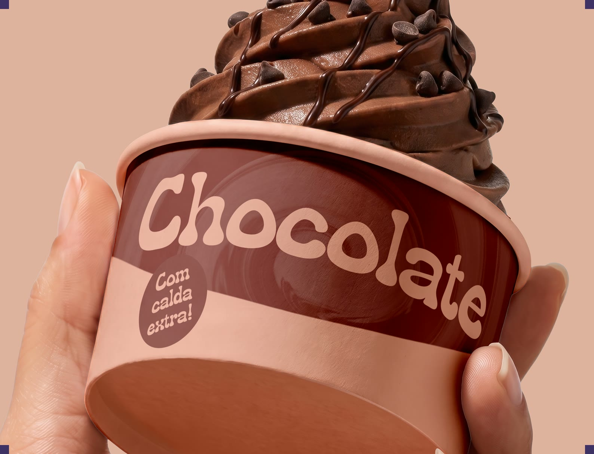
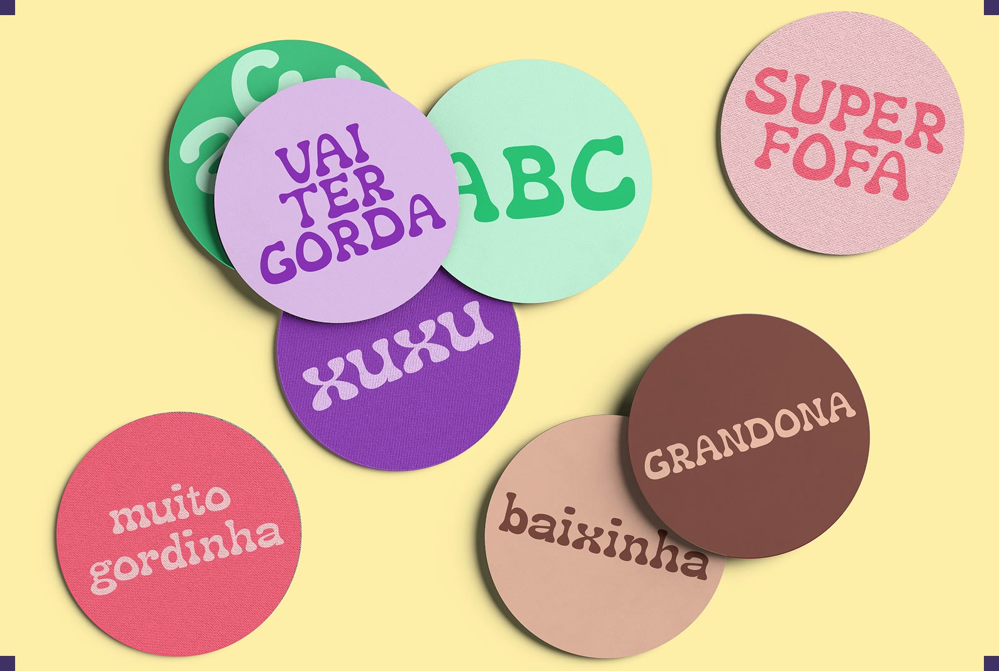
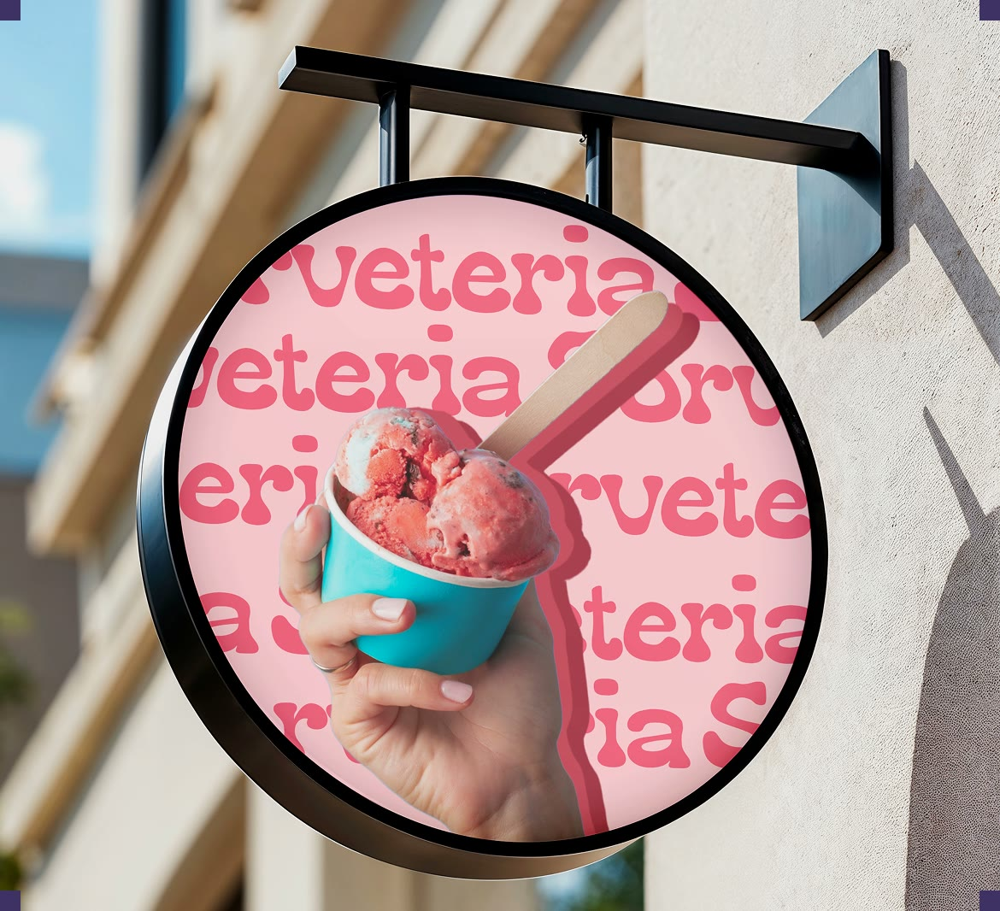

Gorducha
Gorducha, uma tipografia nascida a partir de um exercício inspirado em elementos naturais que busca resgatar a estética divertida e orgânica dos anos 70, misturando-a com uma abordagem moderna de formas cheias e arredondadas.
DisciplinaTipografia
EquipeLaura Alcantara
Ano2025-2



tipografia display, cuja a estrutura cativante torna-a perfeita para títulos divertidos, produtos e logotipos vibrantes de produtos alegres.



buscamos formas que transmitisse gostosura pura,
e cremosidade, foi a nossa palavra-chave para a criação da identidade visual.
escolha a cor